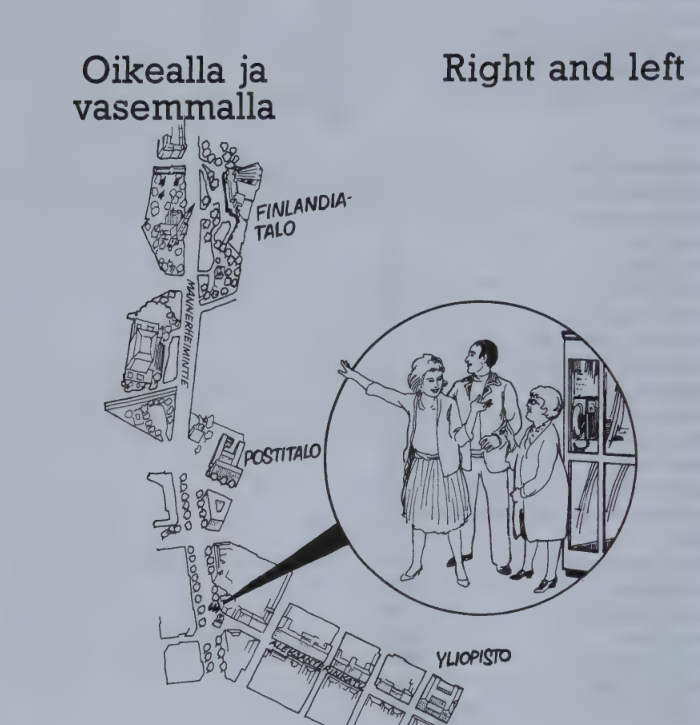
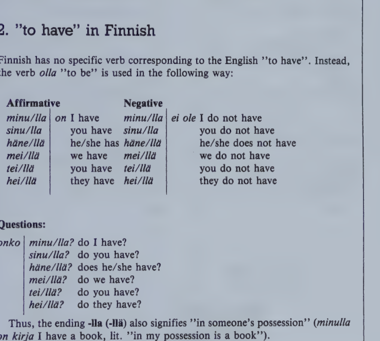

Kappale 8 / Lesson 8#
Oikealla ja vasemmalla / Right and left#

Suomi |
English |
|---|---|
1. Rouva Hill. Hyvää huomenta! |
1. Mrs Hill. Good morning! |
2. Neiti Salo. Huomenta! |
2. Miss Salo. Good morning! |
3. Rva H. Kaunis ilma tänään. |
3. Mrs. H. Fine weather today. |
4. Nti S. Mutta vähän kylmä. |
4. Miss S. But a little cold. |
5. Rva H. Saanko esitellä: mieheni - neiti Salo. |
5. Mrs. H. May I introduce you? My husband - Miss Salo. |
6. Hra H. Neiti Salo, missä lähin posti on? |
6. Mr. H. Miss Salo, where is the nearest post-office? |
7. Nti S. Mannerheimintiellä. Se on tuo talo tuolla. |
7. Miss S. On Mannerheim Road. It’s that building over there. |
8. Rva H. Ja millä kadulla Finlandia-talo on? |
8. Mrs. H. And on what street is Finlandia Hall? |
9. Nti S. Myös Mannerheimintiellä, tuolla oikealla. |
9. Miss S. Also on Mannerheim Road, over there, on the right. |
10. Hra H. Missä yliopisto on? |
10. Mr. H. Where is the University? |
11. Nti S. Se on Aleksanterinkadulla. “Aleksi” on tämä katu täällä vasemmalla. |
11. Miss S. It’s on Alexander Street. “Aleksi” is this street here, on the left. |
12. Rva H. Kiitoksia, neiti Salo, ja näkemiin! |
12. Mrs. H. Thank you very much, Miss Salo, and goodbye. |
Missä auto on? Kadulla.
Millä sinä kirjoitat? Kynällä.
Millä te tulette kurssille? Bussilla. Metrolla. Autolla.
uo huomenta, nuori mies, tuo suomalainen tuolla
uo-yö tuo myös, myös tuo, myös Suomi, Suomi myös
uo-yö-ie myös mies, tuo mies myös, myös tuo tie
Keep stress on first syllable:
huomenta, anteeksi, kadulla, Helsinki, esitellä, Finlandia-talo, Mannerheimintie, yliopisto
Kielioppia / Structural notes#
1. The “on” case (adessive)#
Finnish |
English |
Question |
English |
|---|---|---|---|
katu (gen. kadu/n) |
street |
missä? kadu/lla |
where? on the street |
hyvä tie |
a good road |
hyvä/llä tie/llä |
on a good road |
ovi (gen. ove/n) |
door |
ove/lla |
at the door |
In local expressions answering the questions “where?”, “wherefrom?”, “whereto?” Finnish very often uses noun endings, not prepositions as in English.
The ending roughly corresponding to “on, at” is -lla (-llä). Whenever the basic form and the genitive stem are different, use the gen. stem before this ending.
Note:
Basic expression |
Case form |
|---|---|
tämä katu |
tä/llä kadu/lla |
mikä katu? |
mi/llä kadu/lla? |
se katu |
si/llä kadu/lla |
Local cases may also have non-local functions. Thus, the ending -lla (-llä) has also the meaning “with, by means of (something)”:
Finnish |
English |
|---|---|
Kirjoitan kynä/llä. |
I write with a pen (pencil). |
Mi/llä sinä maksat kaupassa? Raha/lla tai seki/llä. |
What do you pay with in the shop? With money or with a check. |
Tule taksi/lla! |
Come by taxi! |
When you use poss. suffixes with the different cases, the poss. suffix always follows the case ending:
Finnish |
English |
|---|---|
Istun tuoli/lla/ni. |
I’m sitting on my chair. |
Tuletko sinä kurssille auto/lla/si? |
Do you come to the course by car? |
(The “in” case will be explained in 10:1.)

Finlandia-talo. Vasemmalla Eduskuntatalo, oikealla Kansallismuseon torni.
Sanasto / Vocabulary#
Finnish |
English |
|---|---|
+esitel/lä (esittele/n-t-tte) |
to introduce |
huomenta (= hyvää h.) |
good morning |
ilma-n |
air; weather |
kiitoksia |
thank you, thanks |
kylmä-n (!= lämmin warm) |
cold |
lähin lähimmän |
nearest, closest |
missä? |
where? |
myös |
also, too |
+neiti neidi/n |
Miss |
oikealla |
on the right |
posti-n |
post, mail; post-office; mailman, postman |
saa/da (saa/n-t-tte) |
to be allowed, may; to get, receive |
saanko? |
may I? may I have? |
tuolla (from tuo) |
over there |
täällä (from tämä) |
here |
vasemmalla |
on the left |
yli/opisto-n |
university |
*
Finnish |
English |
|---|---|
hotelli-n |
hotel |
+konsertti konsertin |
concert |
kynä-n |
pen, pencil |
metro-n |
subway |
millä? (from mikä?) |
what with? by what means? |
ovi oven |
door |
raha-n |
money; coin |
rahaa |
some money |
+sekki sekin |
check |
taksi-n |
taxi |
teatteri-n |
theater |
turisti-n |
tourist |
vaimo-n |
wife |
Kappale 9 / Lesson 9#
Onko sinulla rahaa? / Do you have any money?#
Rouva Hill haluaa soittaa / Mrs. Hill wants to make a phone call#
Suomi |
English |
|---|---|
1. Rva H. Minä haluan soittaa. Missä on lähin puhelin? |
1. Mrs. H. I want to make a phone call. Where’s the nearest telephone? |
2. Hra H. Tuolla on kioski. Onko sinulla markka? Minulla ei ole. |
2. Mr. H. There’s a booth. Do you have a mark? I don’t. |
3. Rva H. Minä luulen, että minulla on pikkurahaa. Hetkinen, minä katson. Ei ole! |
3. Mrs. H. I think (that) I have some small change. One moment, I’ll see. No, I haven’t any! |
4. Hra H. Katso, neiti Salo on vielä tuolla. Ehkä hänellä on rahaa. Anteeksi, neiti Salo! Onko teillä markka? Vaimoni haluaa soittaa. |
4. Mr. H. Look, Miss Salo is still there. Perhaps she has some money. Excuse me, Miss Salo! Do you have a mark? My wife wants to make a phone call. |
5. Nti S. Hetkinen vain, minä katson. Ei ole. Mutta tuolla tulee Ville Vuori. Ehkä hänellä on. Hei, Ville! Onko sinulla markka? Rouva Hill haluaa soittaa. |
5. Miss S. Just a moment, I’ll see. No, I haven’t. But there comes Ville Vuori. Maybe he has some. Hello, Ville! Do you have a mark? Mrs. Hill wants to make a phone call. |
6. V. Hetkinen! Ei ole, minulla on vain viisikymmentä penniä. |
6. V. One moment! No, I only have fifty pennies. |
7. Rva H. No, sitten minä en voi soittaa. Minulla on aina huono onni. |
7. Mrs. H. Well, then I can’t make my phone call. I always have bad luck. |
“that”
Tuo on kaunis valssi.
Minä luulen, että se on Sibeliuksen Valse triste.
pikku/pieni
Pikku Liisa on vielä pieni.
pieni/vähän
Rauma on pieni kaupunki (ei iso).
Minulla on vähän rahaa (ei paljon).
Kenellä on markka?
Minulla.
Kielioppia / Structural notes#
1. Personal pronouns#
The six personal pronouns in Finnish are:
Pronoun |
English |
Genitive |
Meaning |
|---|---|---|---|
minä |
I |
minun |
my, mine |
sinä |
you |
sinun |
your(s) |
hän |
he/she |
hänen |
his/her(s) |
me |
we |
meidän |
our(s) |
te |
you |
teidän |
your(s) |
he |
they |
heidän |
their(s) |
2. “to have” in Finnish#
Finnish has no specific verb corresponding to the English “to have”. Instead, the verb olla “to be” is used in the following way:
Affirmative |
English |
Negative |
English |
|---|---|---|---|
minu/lla on |
I have |
minu/lla ei ole |
I do not have |
sinu/lla |
you have |
sinu/lla |
you do not have |
häne/llä |
he/she has |
häne/llä |
he/she does not have |
mei/llä |
we have |
mei/llä |
we do not have |
tei/llä |
you have |
tei/llä |
you do not have |
hei/llä |
they have |
hei/llä |
they do not have |
Questions:
Finnish |
English |
|---|---|
onko minu/lla? |
do I have? |
sinu/lla? |
do you have? |
häne/llä? |
does he/she have? |
mei/llä? |
do we have? |
tei/llä? |
do you have? |
hei/llä? |
do they have? |
Thus, the ending -lla (-llä) also signifies “in someone’s possession” (minulla on kirja I have a book, lit. “in my possession is a book”).
More about the Finnish “to have” in 17:2.
Sanasto / Vocabulary#
Finnish |
English |
|---|---|
aina |
always |
ehkä |
maybe, perhaps |
että (must not be omitted!) |
that (when starting a clause) |
luulen, että voin |
I think I can |
hetkinen, hetkisen (= hetki hetken) |
moment, while |
katso/a (katso/n-t-tte) |
to look, watch; to have a look |
katso! (colloq. kato!) |
look! see! |
kioski-n |
stand, booth, kiosk |
luul/la (luule/n-t-tte) |
to think, suppose, presume |
no |
well, now |
onni onnen |
happiness; luck, fortune |
pikku (indeclinable) |
little |
pikku/raha |
small change |
sitten |
then, after that; ago |
vielä |
still, yet; more, also |
voi/da (voi/n-t-tte) |
to be able, can |
*
Finnish |
English |
|---|---|
he heidän |
they (human beings) |
kello-n |
watch, clock; the time; bell |
koira-n |
dog |
+lamppu lampun |
lamp |
me meidän |
we |
valssi-n |
waltz |